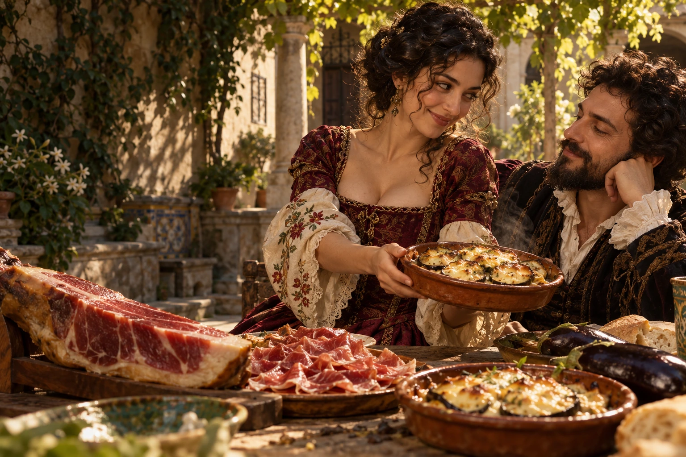
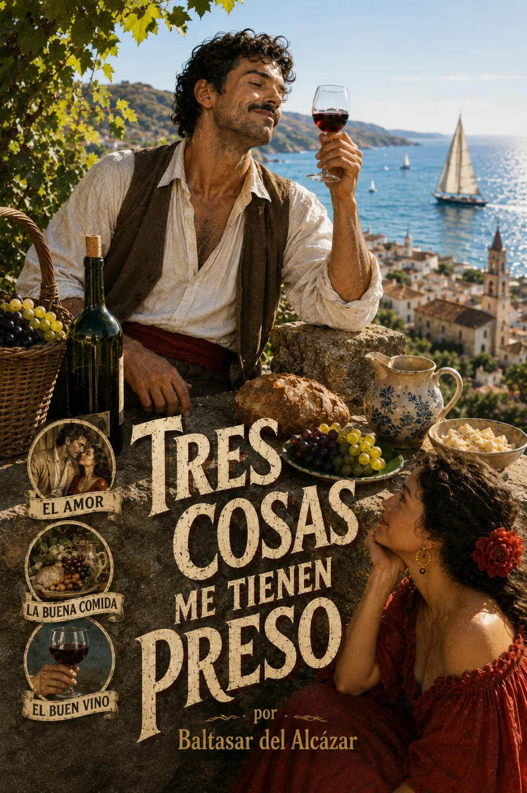

Audiolibros · Segunda Ola
Baltasar del Alcázar · Siglos XVI–XVII
Edición impresa de referencia: 1910
Tres cosas
me tienen preso
El corazón también tiene apetito.
Inés. El jamón. Las berenjenas con queso.
Tres amores; ninguna intención de elegir.

Hasta el amor necesita un contrapeso.
Grabación próximamente
Volumen

Una deliciosa falta de solemnidad
El hablante confiesa que Inés lo tuvo enamorado hasta que una merienda puso otros dos placeres a competir por su corazón: el jamón y las berenjenas con queso. La repetición de esos tres amores convierte la declaración sentimental en una disputa cómica donde el apetito pesa tanto como la belleza.
El deseo baja del pedestal y se sienta a la mesa.
La escena reúne a Inés y los alimentos del poema en una sobremesa imaginada. El patio, los rostros y los vestidos son una interpretación artística. El humor nace de esa equivalencia imposible: el lenguaje del enamorado se transforma en una negociación muy terrenal.
Texto del poema · Instituto Cervantes de Milán. No se atribuye aquí un año exacto de composición o primera publicación. El poema se documenta en Poesías de Baltasar del Alcázar, edición de la Real Academia Española (Madrid, 1910). Se identifica una edición de referencia, no una primera publicación demostrada. Benemérita Universidad Autónoma de Puebla · texto y procedencia.
La lectura
Tres cosas me tienen preso · Poema completo
Grabación próximamente. La lectura de la obra estará disponible aquí. Las grabaciones se incorporarán cuando estén preparadas.
Valoración

Bueno